Regression Plots#
[1]:
%matplotlib inline
[2]:
import matplotlib.pyplot as plt
import numpy as np
import statsmodels.api as sm
from statsmodels.compat import lzip
from statsmodels.formula.api import ols
plt.rc("figure", figsize=(16, 8))
plt.rc("font", size=14)
Duncan’s Prestige Dataset#
Load the Data#
We can use a utility function to load any R dataset available from the great Rdatasets package.
[3]:
prestige = sm.datasets.get_rdataset("Duncan", "carData", cache=True).data
[4]:
prestige.head()
[4]:
| type | income | education | prestige | |
|---|---|---|---|---|
| rownames | ||||
| accountant | prof | 62 | 86 | 82 |
| pilot | prof | 72 | 76 | 83 |
| architect | prof | 75 | 92 | 90 |
| author | prof | 55 | 90 | 76 |
| chemist | prof | 64 | 86 | 90 |
[5]:
prestige_model = ols("prestige ~ income + education", data=prestige).fit()
[6]:
print(prestige_model.summary())
OLS Regression Results
==============================================================================
Dep. Variable: prestige R-squared: 0.828
Model: OLS Adj. R-squared: 0.820
Method: Least Squares F-statistic: 101.2
Date: Wed, 01 Jul 2026 Prob (F-statistic): 8.65e-17
Time: 22:08:40 Log-Likelihood: -178.98
No. Observations: 45 AIC: 364.0
Df Residuals: 42 BIC: 369.4
Df Model: 2
Covariance Type: nonrobust
==============================================================================
coef std err t P>|t| [0.025 0.975]
------------------------------------------------------------------------------
Intercept -6.0647 4.272 -1.420 0.163 -14.686 2.556
income 0.5987 0.120 5.003 0.000 0.357 0.840
education 0.5458 0.098 5.555 0.000 0.348 0.744
==============================================================================
Omnibus: 1.279 Durbin-Watson: 1.458
Prob(Omnibus): 0.528 Jarque-Bera (JB): 0.520
Skew: 0.155 Prob(JB): 0.771
Kurtosis: 3.426 Cond. No. 163.
==============================================================================
Notes:
[1] Standard Errors assume that the covariance matrix of the errors is correctly specified.
Influence plots#
Influence plots show the (externally) studentized residuals vs. the leverage of each observation as measured by the hat matrix.
Externally studentized residuals are residuals that are scaled by their standard deviation where
with
\(n\) is the number of observations and \(p\) is the number of regressors. \(h_{ii}\) is the \(i\)-th diagonal element of the hat matrix
The influence of each point can be visualized by the criterion keyword argument. Options are Cook’s distance and DFFITS, two measures of influence.
[7]:
fig = sm.graphics.influence_plot(prestige_model, criterion="cooks")
fig.tight_layout(pad=1.0)
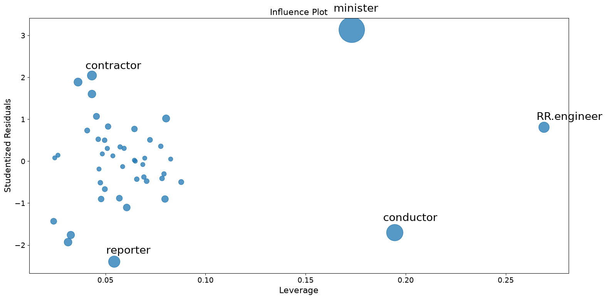
As you can see there are a few worrisome observations. Both contractor and reporter have low leverage but a large residual. RR.engineer has small residual and large leverage. Conductor and minister have both high leverage and large residuals, and, therefore, large influence.
Partial Regression Plots (Duncan)#
Since we are doing multivariate regressions, we cannot just look at individual bivariate plots to discern relationships. Instead, we want to look at the relationship of the dependent variable and independent variables conditional on the other independent variables. We can do this through using partial regression plots, otherwise known as added variable plots.
In a partial regression plot, to discern the relationship between the response variable and the \(k\)-th variable, we compute the residuals by regressing the response variable versus the independent variables excluding \(X_k\). We can denote this by \(X_{\sim k}\). We then compute the residuals by regressing \(X_k\) on \(X_{\sim k}\). The partial regression plot is the plot of the former versus the latter residuals.
The notable points of this plot are that the fitted line has slope \(\beta_k\) and intercept zero. The residuals of this plot are the same as those of the least squares fit of the original model with full \(X\). You can discern the effects of the individual data values on the estimation of a coefficient easily. If obs_labels is True, then these points are annotated with their observation label. You can also see the violation of underlying assumptions such as homoskedasticity and linearity.
[8]:
fig = sm.graphics.plot_partregress(
"prestige", "income", ["income", "education"], data=prestige
)
fig.tight_layout(pad=1.0)
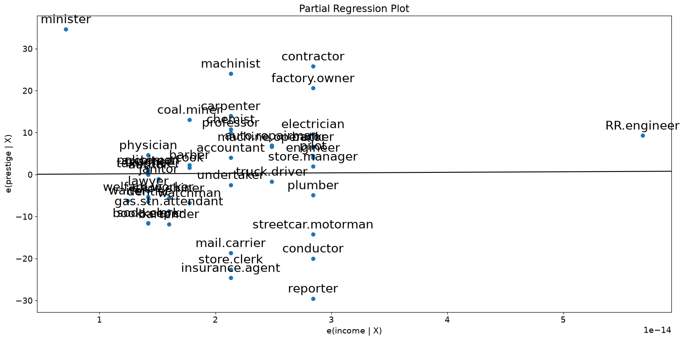
[9]:
fig = sm.graphics.plot_partregress("prestige", "income", ["education"], data=prestige)
fig.tight_layout(pad=1.0)
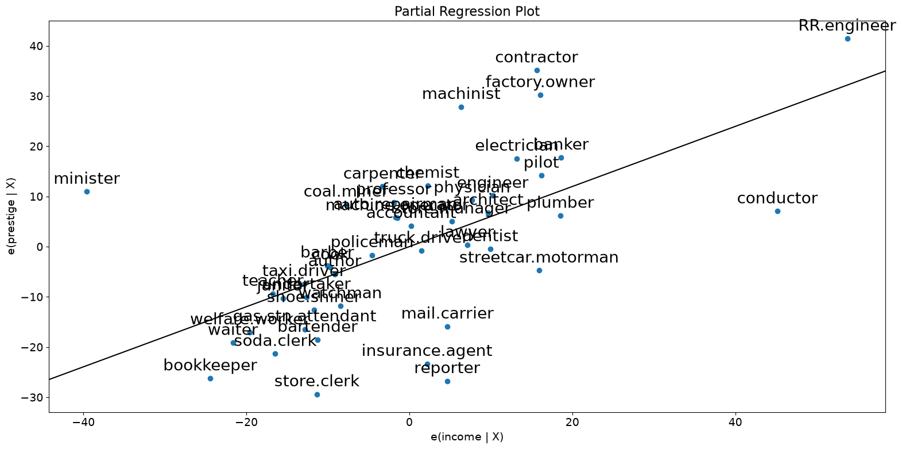
As you can see the partial regression plot confirms the influence of conductor, minister, and RR.engineer on the partial relationship between income and prestige. The cases greatly decrease the effect of income on prestige. Dropping these cases confirms this.
[10]:
subset = ~prestige.index.isin(["conductor", "RR.engineer", "minister"])
prestige_model2 = ols(
"prestige ~ income + education", data=prestige, subset=subset
).fit()
print(prestige_model2.summary())
OLS Regression Results
==============================================================================
Dep. Variable: prestige R-squared: 0.876
Model: OLS Adj. R-squared: 0.870
Method: Least Squares F-statistic: 138.1
Date: Wed, 01 Jul 2026 Prob (F-statistic): 2.02e-18
Time: 22:08:45 Log-Likelihood: -160.59
No. Observations: 42 AIC: 327.2
Df Residuals: 39 BIC: 332.4
Df Model: 2
Covariance Type: nonrobust
==============================================================================
coef std err t P>|t| [0.025 0.975]
------------------------------------------------------------------------------
Intercept -6.3174 3.680 -1.717 0.094 -13.760 1.125
income 0.9307 0.154 6.053 0.000 0.620 1.242
education 0.2846 0.121 2.345 0.024 0.039 0.530
==============================================================================
Omnibus: 3.811 Durbin-Watson: 1.468
Prob(Omnibus): 0.149 Jarque-Bera (JB): 2.802
Skew: -0.614 Prob(JB): 0.246
Kurtosis: 3.303 Cond. No. 158.
==============================================================================
Notes:
[1] Standard Errors assume that the covariance matrix of the errors is correctly specified.
For a quick check of all the regressors, you can use plot_partregress_grid. These plots will not label the points, but you can use them to identify problems and then use plot_partregress to get more information.
[11]:
fig = sm.graphics.plot_partregress_grid(prestige_model)
fig.tight_layout(pad=1.0)
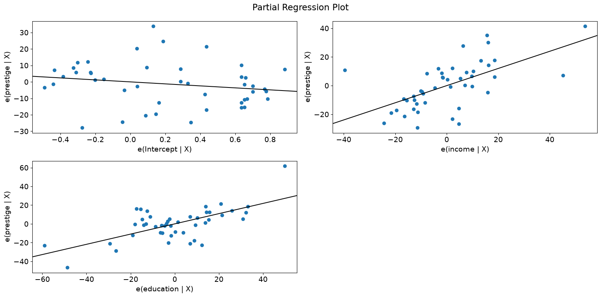
Component-Component plus Residual (CCPR) Plots#
The CCPR plot provides a way to judge the effect of one regressor on the response variable by taking into account the effects of the other independent variables. The partial residuals plot is defined as \(\text{Residuals} + B_iX_i \text{ }\text{ }\) versus \(X_i\). The component adds \(B_iX_i\) versus \(X_i\) to show where the fitted line would lie. Care should be taken if \(X_i\) is highly correlated with any of the other independent variables. If this is the case, the variance evident in the plot will be an underestimate of the true variance.
[12]:
fig = sm.graphics.plot_ccpr(prestige_model, "education")
fig.tight_layout(pad=1.0)
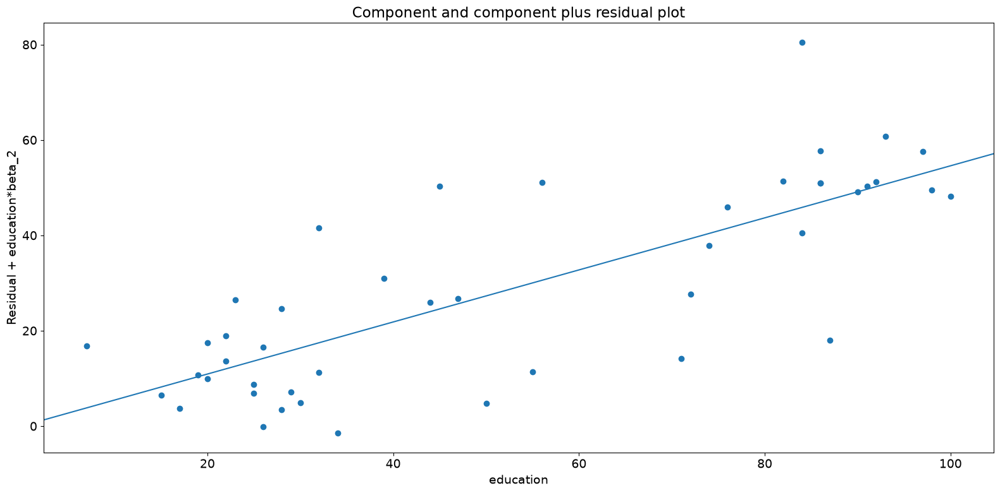
As you can see the relationship between the variation in prestige explained by education conditional on income seems to be linear, though you can see there are some observations that are exerting considerable influence on the relationship. We can quickly look at more than one variable by using plot_ccpr_grid.
[13]:
fig = sm.graphics.plot_ccpr_grid(prestige_model)
fig.tight_layout(pad=1.0)
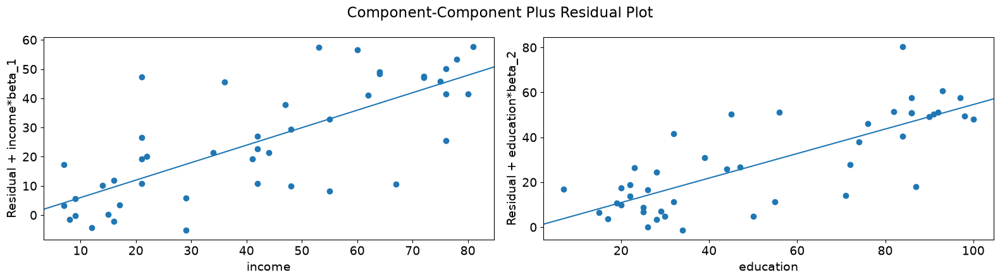
Single Variable Regression Diagnostics#
The plot_regress_exog function is a convenience function that gives a 2x2 plot containing the dependent variable and fitted values with confidence intervals vs. the independent variable chosen, the residuals of the model vs. the chosen independent variable, a partial regression plot, and a CCPR plot. This function can be used for quickly checking modeling assumptions with respect to a single regressor.
[14]:
fig = sm.graphics.plot_regress_exog(prestige_model, "education")
fig.tight_layout(pad=1.0)
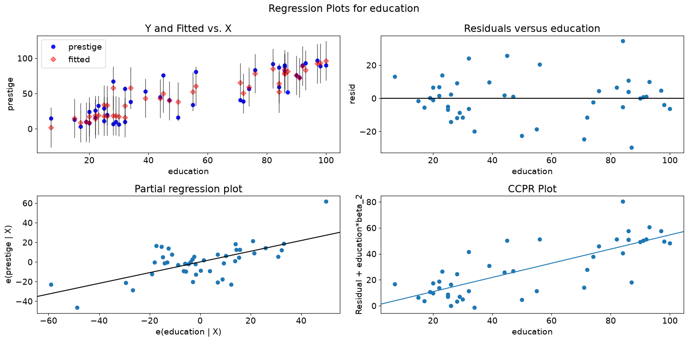
Fit Plot#
The plot_fit function plots the fitted values versus a chosen independent variable. It includes prediction confidence intervals and optionally plots the true dependent variable.
[15]:
fig = sm.graphics.plot_fit(prestige_model, "education")
fig.tight_layout(pad=1.0)
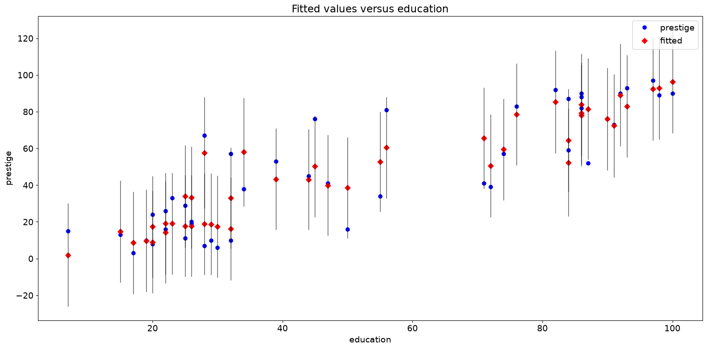
Statewide Crime 2009 Dataset#
Compare the following to http://www.ats.ucla.edu/stat/stata/webbooks/reg/chapter4/statareg_self_assessment_answers4.htm
Though the data here is not the same as in that example. You could run that example by uncommenting the necessary cells below.
[16]:
# dta = pd.read_csv("http://www.stat.ufl.edu/~aa/social/csv_files/statewide-crime-2.csv")
# dta = dta.set_index("State", inplace=True).dropna()
# dta.rename(columns={"VR" : "crime",
# "MR" : "murder",
# "M" : "pctmetro",
# "W" : "pctwhite",
# "H" : "pcths",
# "P" : "poverty",
# "S" : "single"
# }, inplace=True)
#
# crime_model = ols("murder ~ pctmetro + poverty + pcths + single", data=dta).fit()
[17]:
dta = sm.datasets.statecrime.load_pandas().data
[18]:
crime_model = ols("murder ~ urban + poverty + hs_grad + single", data=dta).fit()
print(crime_model.summary())
OLS Regression Results
==============================================================================
Dep. Variable: murder R-squared: 0.813
Model: OLS Adj. R-squared: 0.797
Method: Least Squares F-statistic: 50.08
Date: Wed, 01 Jul 2026 Prob (F-statistic): 3.42e-16
Time: 22:08:51 Log-Likelihood: -95.050
No. Observations: 51 AIC: 200.1
Df Residuals: 46 BIC: 209.8
Df Model: 4
Covariance Type: nonrobust
==============================================================================
coef std err t P>|t| [0.025 0.975]
------------------------------------------------------------------------------
Intercept -44.1024 12.086 -3.649 0.001 -68.430 -19.774
urban 0.0109 0.015 0.707 0.483 -0.020 0.042
poverty 0.4121 0.140 2.939 0.005 0.130 0.694
hs_grad 0.3059 0.117 2.611 0.012 0.070 0.542
single 0.6374 0.070 9.065 0.000 0.496 0.779
==============================================================================
Omnibus: 1.618 Durbin-Watson: 2.507
Prob(Omnibus): 0.445 Jarque-Bera (JB): 0.831
Skew: -0.220 Prob(JB): 0.660
Kurtosis: 3.445 Cond. No. 5.80e+03
==============================================================================
Notes:
[1] Standard Errors assume that the covariance matrix of the errors is correctly specified.
[2] The condition number is large, 5.8e+03. This might indicate that there are
strong multicollinearity or other numerical problems.
Partial Regression Plots (Crime Data)#
[19]:
fig = sm.graphics.plot_partregress_grid(crime_model)
fig.tight_layout(pad=1.0)
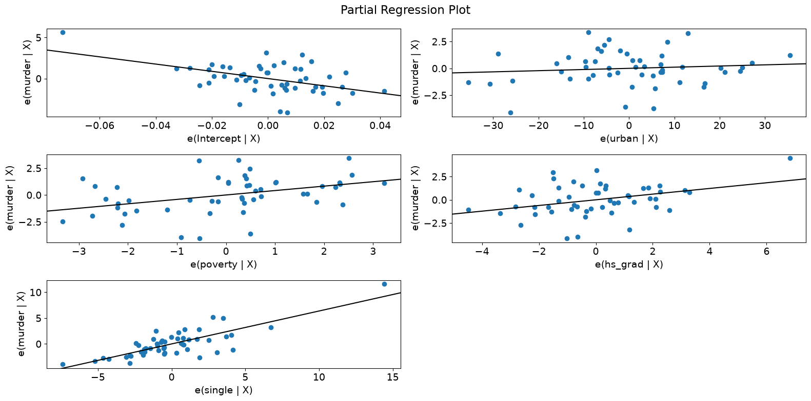
[20]:
fig = sm.graphics.plot_partregress(
"murder", "hs_grad", ["urban", "poverty", "single"], data=dta
)
fig.tight_layout(pad=1.0)
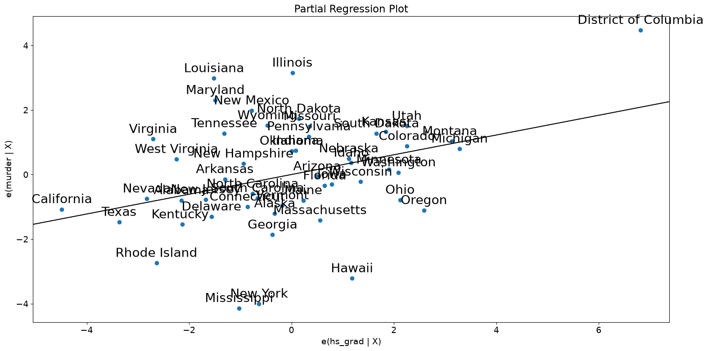
Leverage-Resid2 Plot#
Closely related to the influence_plot is the leverage-resid2 plot.
[21]:
fig = sm.graphics.plot_leverage_resid2(crime_model)
fig.tight_layout(pad=1.0)
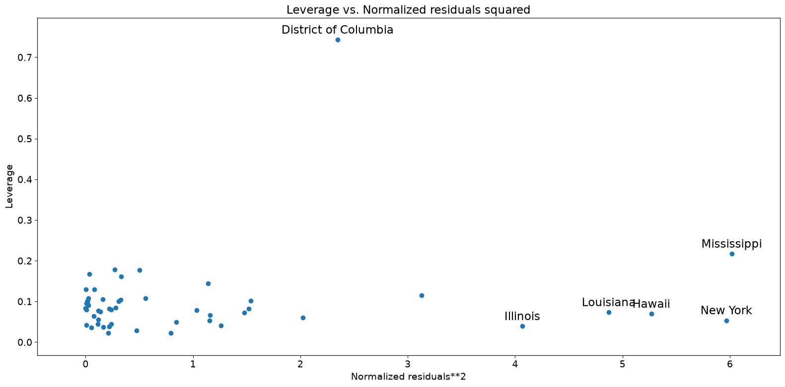
Influence Plot#
[22]:
fig = sm.graphics.influence_plot(crime_model)
fig.tight_layout(pad=1.0)
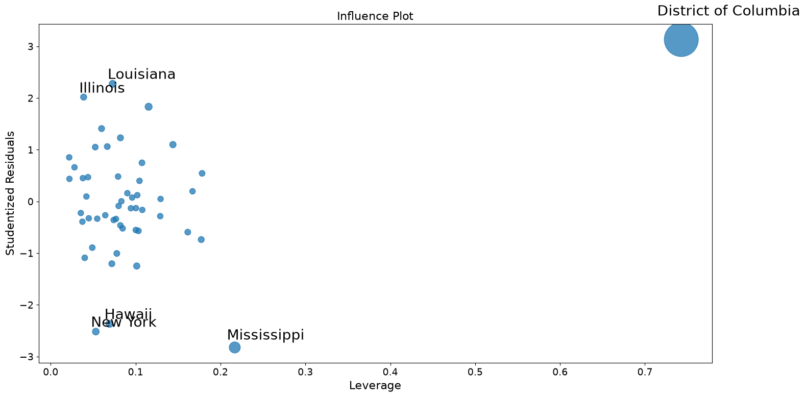
Using robust regression to correct for outliers.#
Part of the problem here in recreating the Stata results is that M-estimators are not robust to leverage points. MM-estimators should do better with this examples.
[23]:
from statsmodels.formula.api import rlm
[24]:
rob_crime_model = rlm(
"murder ~ urban + poverty + hs_grad + single",
data=dta,
M=sm.robust.norms.TukeyBiweight(3),
).fit(conv="weights")
print(rob_crime_model.summary())
Robust linear Model Regression Results
==============================================================================
Dep. Variable: murder No. Observations: 51
Model: RLM Df Residuals: 46
Method: IRLS Df Model: 4
Norm: TukeyBiweight
Scale Est.: mad
Cov Type: H1
Date: Wed, 01 Jul 2026
Time: 22:08:56
No. Iterations: 50
==============================================================================
coef std err z P>|z| [0.025 0.975]
------------------------------------------------------------------------------
Intercept -4.2986 9.494 -0.453 0.651 -22.907 14.310
urban 0.0029 0.012 0.241 0.809 -0.021 0.027
poverty 0.2753 0.110 2.499 0.012 0.059 0.491
hs_grad -0.0302 0.092 -0.328 0.743 -0.211 0.150
single 0.2902 0.055 5.253 0.000 0.182 0.398
==============================================================================
If the model instance has been used for another fit with different fit parameters, then the fit options might not be the correct ones anymore .
[25]:
# rob_crime_model = rlm("murder ~ pctmetro + poverty + pcths + single", data=dta, M=sm.robust.norms.TukeyBiweight()).fit(conv="weights")
# print(rob_crime_model.summary())
There is not yet an influence diagnostics method as part of RLM, but we can recreate them. (This depends on the status of issue #888)
[26]:
weights = rob_crime_model.weights
idx = weights > 0
X = rob_crime_model.model.exog[idx.values]
ww = weights[idx] / weights[idx].mean()
hat_matrix_diag = ww * (X * np.linalg.pinv(X).T).sum(1)
resid = rob_crime_model.resid
resid2 = resid**2
resid2 /= resid2.sum()
nobs = int(idx.sum())
hm = hat_matrix_diag.mean()
rm = resid2.mean()
[27]:
from statsmodels.graphics import utils
fig, ax = plt.subplots(figsize=(16, 8))
ax.plot(resid2[idx], hat_matrix_diag, "o")
ax = utils.annotate_axes(
range(nobs),
labels=rob_crime_model.model.data.row_labels[idx],
points=lzip(resid2[idx], hat_matrix_diag),
offset_points=[(-5, 5)] * nobs,
size="large",
ax=ax,
)
ax.set_xlabel("resid2")
ax.set_ylabel("leverage")
ylim = ax.get_ylim()
ax.vlines(rm, *ylim)
xlim = ax.get_xlim()
ax.hlines(hm, *xlim)
ax.margins(0, 0)
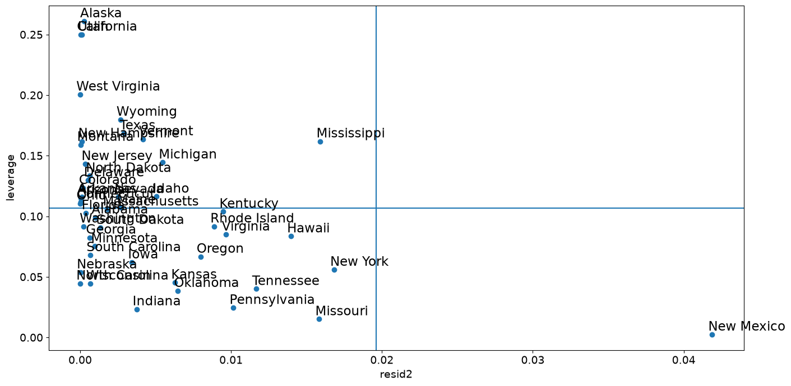